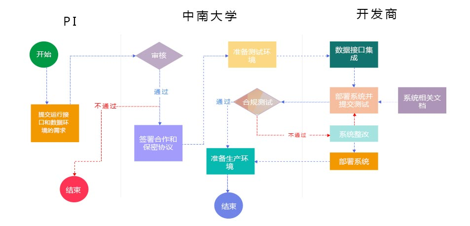
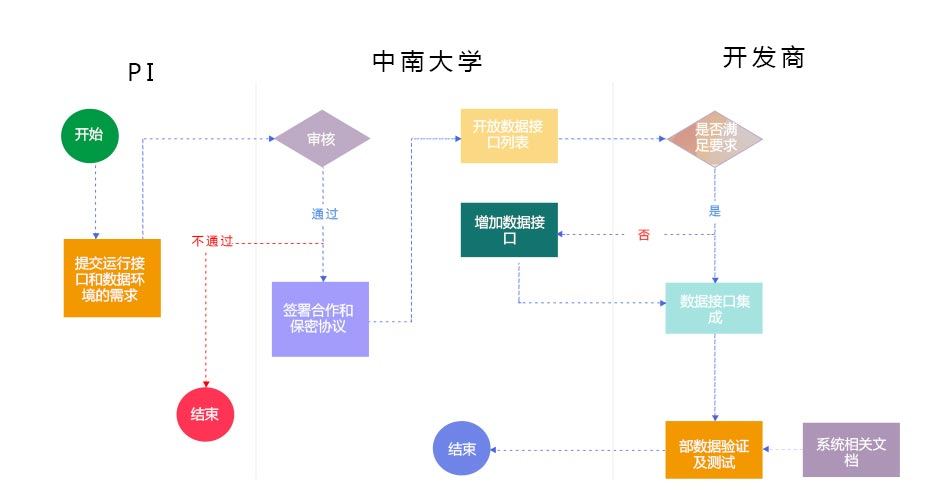
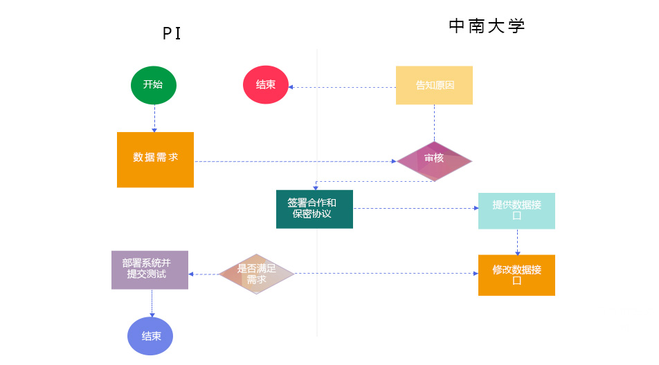
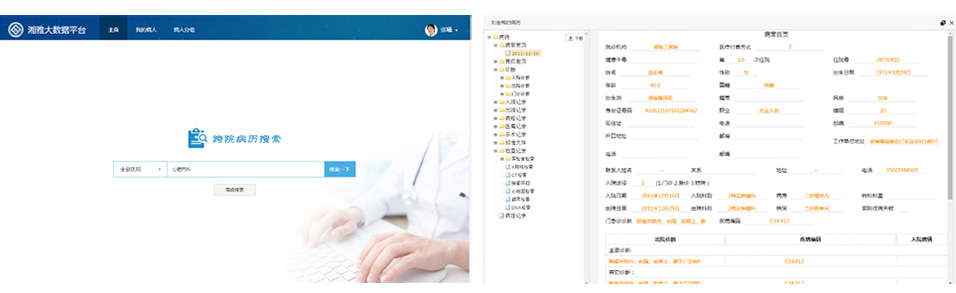
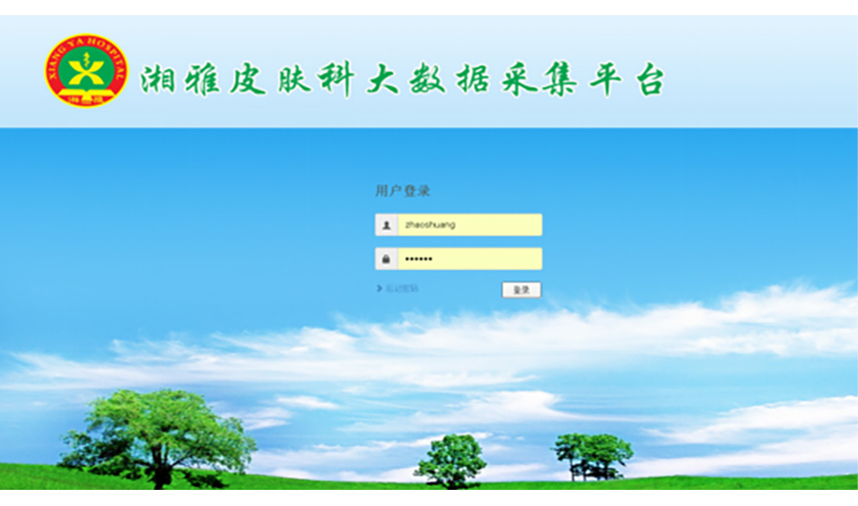
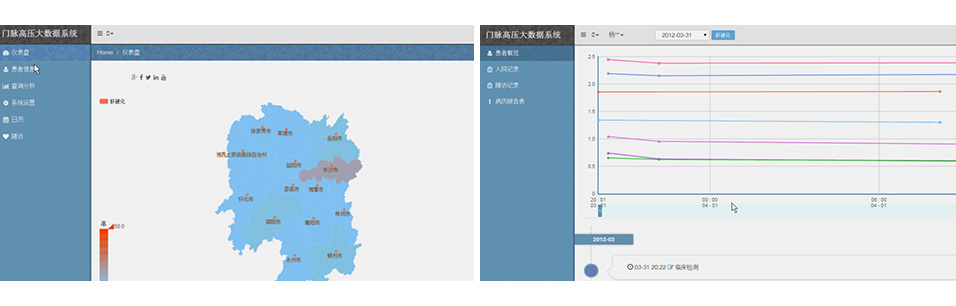
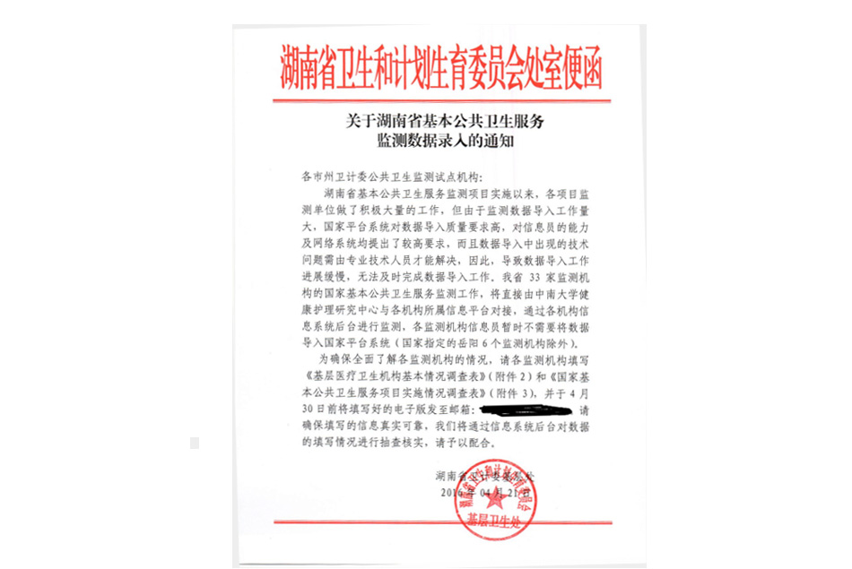

PI科研项目通过大数据平台提供的数据接口与运行环境实现应用的上线。为支撑PI的临床科研大数据项目，湘雅医学大数据平台利用“云平台+大数据”的技术架构，在整合湘雅多家医院的医学数据的基础上，为PI科研项目提供统一的数据访问接口；此外为更好地为PI临床科研项目提供服务实现PI临床科研项目的统一管理。
中南大学信息安全与大数据研究院目前为更好协助PI完成科研项目，提供三种对接模式。
模式一：科研项目数据和应用部署在大数据平台，实现无缝集成
PI建设好临床科研系统之后，向中南大学提交数据接口和系统运行环境需求，中南大学审核通过并与PI签署合作保密协议后，由信息安全与大数据研究院和临床科研项目开发商协作完成系统整改，实现与湘雅医学大数据平台对接，最终系统部署到中南大学的大数据中心.
在PI临床科研项目接入流程中，共涉及三个方面的角色，分别是PI、中南大学、开发商。其中PI是数据和应用的使用方，中南大学是数据以及应用运行环境的提供方（平台方），开发商是PI临床科研项目的合作开发方。
科研项目接入主体流程描述：
1.提交数据接口和运行环境需求：PI根据自身科研项目需要，向中南大学提交项目数据接口和应用运行环境的需求。需求内容主要包括数据接口和应用运行环境是否满足需求，在不满足的情况下提供支持等。平台默认提供PostgreSQL数据库、应用容器软件（JBoss/Tomcat）
2.审核：平台方审核PI团队提交的项目需求，审核内容主要包括；平台数据和运行环境是否满足需求，PI数据需求范围是否合理
3.签署合作和保密协议：经平台方审核后，双方签署合作保密协议。
4.准备测试环境：根据项目应用环境要求，中南大学信息安全与大数据研究院负责在大数据平台上为PI项目提供测试环境以部署应用，为后续测试工作做好准备。
5.数据接口集成：开发商在测试环境上将应用与数据接口集成。系统集成完毕后，与项目相关的技术文档提交给平台方。
6.部署系统并提交测试：接口集成完成后，开发商将应用在测试环境进行部署，并根据系统相关文档完成测试工作。
7.合规测试：平台方对应用系统进行合规测试，包括：测试接口集成测试，互联互通测试和安全测试。
8.准备生产环境：合规测试通过平台方会按照需求创建PI项目应用系统的生产环境为应用分配相关的运行资源。
9.部署系统：开发商将应用部署在生产环境中。
10.系统发布：平台方会把PI项目应用系统发布到医院内部网络上，提供给PI团队使用。
模式二：应用独自部署管理，数据与大数据平台对接
PI科研项目自行进行管理维护，数据对接需要向中南大学提交需求，中南大学审核通过并与PI签署合作保密协议后，由信息安全与大数据研究院和临床科研项目开发商协作完成数据交换，实现与湘雅医学大数据平台对接。
在PI临床科研项目接入流程中，共涉及三个方面的角色，分别是PI、中南大学、开发商。其中PI是数据和应用的使用方，中南大学是数据的提供方（平台方），开发商是PI临床科研项目的合作开发方。
科研项目接入主体流程描述：
1.提交数据接口需求：PI根据自身科研项目需要，向中南大学提交项目数据接口的需求。平台会提供数据接口列表，提供给PI团队选择。当接口不满足需求时，平台方会根据需求开发新的接口。
2.审核：平台方审核PI团队提交的项目需求，审核内容主要包括;平台数据能否满足需求和数据范围是否合理。
3.签署合作和保密协议：经平台方审核后，双方签署合作保密协议。
4．数据接口集成：开发商负责完成数据接口集成。系统接口集成完毕后，与项目相关的技术文档提交给平台方。
5.数据验证及测试：接口集成完成后，开发商根据自身负责的PI项目测试数据准确性。
模式三：数据与应用自我管理,申请提供科研数据
PI进行科研活动时，可以通过大数据平台提供的数据接口获取科研使用的医学数据，为了保护个人隐私，数据会进行脱敏。湘雅医学大数据平台为此提供了一系列的数据接口，如可按科室、诊断、时间等维度来获取医学数据数据对象包括但不仅限于患者基本信息、医嘱信息、检验信息、影像信息、病历文书。当大数据平台的数据接口不能满足PI项目要求时，PI可提交新的数据接口需求。
为规范数据接口需求管理，方便PI申请科研数据，同时保证数据安全，特定义了申请科研数据的管理流程。
在申请科研数据流程中，涉及两类角色：PI、中南大学（平台方）。其中PI是科研数据的申请方，中南大学是大数据平台数据需求审核和数据提供方。
申请科研数据主体流程描述：
1.数据需求：PI根据自身科研需要，提出特定的数据需求;在平台方列出的数据接口或标准数据集的基础上提出
（1）在平台方列出的数据接口或标准数据集的基础上提出。
并选择定期更新的频度，比如一个礼拜一更新。
2.审核：平台方审核PI团队提交的数据需求，审核内容主要包括平台数据能否满足需求，需求范围是否合理。
3.签署合作、保密协议：经平台方审核同意后。
4.提供数据接口：大数据平台按照需求提供数据接口；支持FTPS/HTTPS协议并提供数据文件下载地址。
5.下载数据：PI通过数据接口获取数据。
以上三种模式的对接方式，PI可以根据自身项目情况进行选择，PI在向中南大学申请使用大数据平台数据时，必须提供本身已产生科研项目数据给大数据平台，以保证大数据平台数据的完整性，为PI科研提供更多支持与服务
自湘雅医学大数据平台项目建成以来，通过团队成员的努力取得了一系列的成果。
一、拥有跨院电子病历检索系统
检索系统面向临床医生、科研人员、患者本人等角色，提供不同的功能及展现方式。系统现已实现三家医院临床医疗数据的精确检索、模糊检索、高级检索等主要功能，展示内容涵盖了患者基本信息、门（急）诊信息、病案首页、诊断记录、出入院记录、病程记录、医嘱记录、检查检验记录等信息。(如下图所示）
二、接入湘雅皮肤科大数据采集平台
该平台实现了患者基本信息、病历信息、照片、组织等信息的采集，初（复）诊、历史信息查看、基本的检索统计/图表展示目前利用该平台已收集64例皮肤肿瘤，422例银屑病患者信息。系统正准备接入到中南大学湘雅医学大数据平台。（如下图所示）
三、门脉高压症与肝硬化大数据系统部署到湘雅医学大数据平台
2015年底，平台开发团队与“门脉高压症及肝硬化”PI团队开展门脉高压症与肝硬化大数据系统接入到湘雅医学大数据平台的相关工作。目前门脉高压症与肝硬化大数据系统与大数据平台已实现数据对接，系统已经部署到中南大学湘雅医学大数据平台。（如下图所示）
四、平台正与公共卫生数据对接，为公共卫生服务打下基础
联合护理学院冯辉副教授和湖南省卫生与计划生育委员会，采集居民基本公共卫生服务数据，并集中到医学大数据平台。在此基础上开展“老年人长期照护服务需求预测及长期照护分级体系”构建研究，旨在对湖南省失能老人长期照护需求进行调查和预测的基础上，提出长期照护准入、分级服务评估和内容标准，从而构建管理科学、高效高质、覆盖面广的社区医疗、护理、日常生活照料的连续的分级照护服务体系，进一步推动湖南省乃至全国的老年人健康管理工作的开展。（如下图所示）
五、采动集移医疗应用的咨询数据，拓展平台医学数据的来源
湘雅医学大数据平台还积极从互联网移动医疗应用爬取医疗咨询数据，存储到大数据平台，并进行了数据清洗、文本分析、索引创建等分析处理。目前，针对高血压、心肌病、冠心病和青光眼初步研发了常见病症分析的应用。
六、开展多项科研申报与科研合作
以湘雅医学大数据平台为支撑，开展了多项相关科研课题的申报工作，取得了良好的成效。
· 医学大数据2011协同创新中心获湖南省认定。
· 基础医学院黄菊芳教授牵头申报科技部国家重点研发计划重点专项“生物安全关键技术研究”的项目“分布式人类遗
传资源库建设与应用示范”，已完成预申报，进入第二轮。
· 湘雅医院张国刚教授牵头申报科技部国家重点研发计划重点专项“精准医学研
究”的项目“华中区域自然人群队列研究”，已完成预申报，进入第二轮。
· 参与中国科学院北京基因组研究所牵头的科技部国家重点研发计划重点专项“精准医学研究”的项目“精准医学大数
据处理与利用的标准化技术体系建设”，已完成预申报，进入第二轮。
· 护理学院冯辉副教授成立联合小组，开展湖南省社区健康档案数据的处理、分析与研究工作。
· 参与“移动医疗”教育部-中国移动联合实验室的建设工作。
1月1月14日启动“湘雅临床大数据系统建设项目”并召开新闻发布会.
4月学校医管处就湘雅大数据系统建设项目的启动和实施等近期安排作出说明.
11月刘延东副总理考察中南大学医学大数据系统,指出：要加强医教协同，加快建立实用、共享的医疗大数据平台， 探索具有中国特色的高等教育发展和医疗卫生改革之路
12月对各PI进行了湘雅医学大数据临床需求调研，编制形成了《中南大学湘雅临床大数据系统建设项目功能需求》
3月学校成立了信息安全与大数据研究院，湘雅医学大数据系统建设的工作由学校医管处和研究院共同负责建设
4月张尧学校长提出医学大数据概念设计，为医学大数据提供指导。同月，中南 大学湘雅医数据系统建设顶层计工作小组正式成立。
5月湘雅大数据平台顶层设计方案确定
6月基本完成湘雅医学大数据平台的顶层设计
7月湖南省人民政府省长杜家毫到学校调研表示，优化整合医疗资源是有意义的事情，让群众得以共享优质医疗资 源。“医学大数据2011协同创新中心”获得湖南省教育厅和财政厅的联合批复（湘教通〔2015〕351号）
8月临床大数据项目取得初步成效，建立了基于电子病历系统的高血压患者临床大数据库、高血压患者早期肾损害 风险评估系统等
9月湘雅医学大数据数据源建设技术方案制定
10月湘雅医学大数据电子病历数据标准（初稿）制定
11月湘雅医学大数据IDC建设基本完成，已经积累医学数据超过 1000 TB
12月学校启动中南大学2015医学大数据项目（一期）建设
3月完成《湘雅医学大数据数据集规范》《湘雅医学大数据数据集规范基本信息 数据集》《湘雅医学大数据数据集规范医疗服务数据集》征求意见稿完成医院前置机等设备上架安装部署，并提交医院方使用完成三家医院的离线医疗数据汇聚，其中有1178.9万条患者信息。
4月张高丽副总理到学校调研，现场听取汇报,参观大数据研究院并与师生交流。基本完成跨院电子病历检索功能开发，并在科教楼机房现有设备基础上搭建大数据平台环境。
5月5月8日上午，中南大学湘雅医学大数据项目工作会议在湘雅医学院学术报告 厅召开。副校长周科朝、张灼华，湘雅医学大数据建设102个项目负责人， 各附属医院分管副院长，科学研究部、医院管理处、信息与网络中心、信息 安全与大数据研究院、信息科学与工程学院、软件学院等相关部门负责人参 加会议。